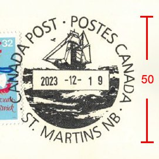

St Martins STN Main pictorial cancel
Ship in the ocean
- Status
- Active
- Run dates
- ? to present
- Design
- ship in the ocean
- Ink colour
- Black
- Designer
- Unknown
- Post office
- St Martins STN Main
2551 Highway 111
St Martins, NB
E5R 2Z0 - Subjects
- ship, vessel, transportation, water, ocean
Collect it by mail. Send your stamped covers, with a stamped return envelope, to the post office address above. How to collect pictorial cancels by mail · en français
 Norton POCovered Bridge Country
Norton POCovered Bridge Country Apohaqui STN MainThe joining of two rivers
Apohaqui STN MainThe joining of two rivers Grand Bay-Westfield STN MainA Community of Friends
Grand Bay-Westfield STN MainA Community of Friends Harvey Station POPAYS DE DON MESSER COUNTRY
Harvey Station POPAYS DE DON MESSER COUNTRY Shediac Main POLe Capitale Mondiale du Homard / The Lobster Capital of the World
Shediac Main POLe Capitale Mondiale du Homard / The Lobster Capital of the World St-Louis-de-Kent Main POBerceau du drapeau acadien
St-Louis-de-Kent Main POBerceau du drapeau acadien